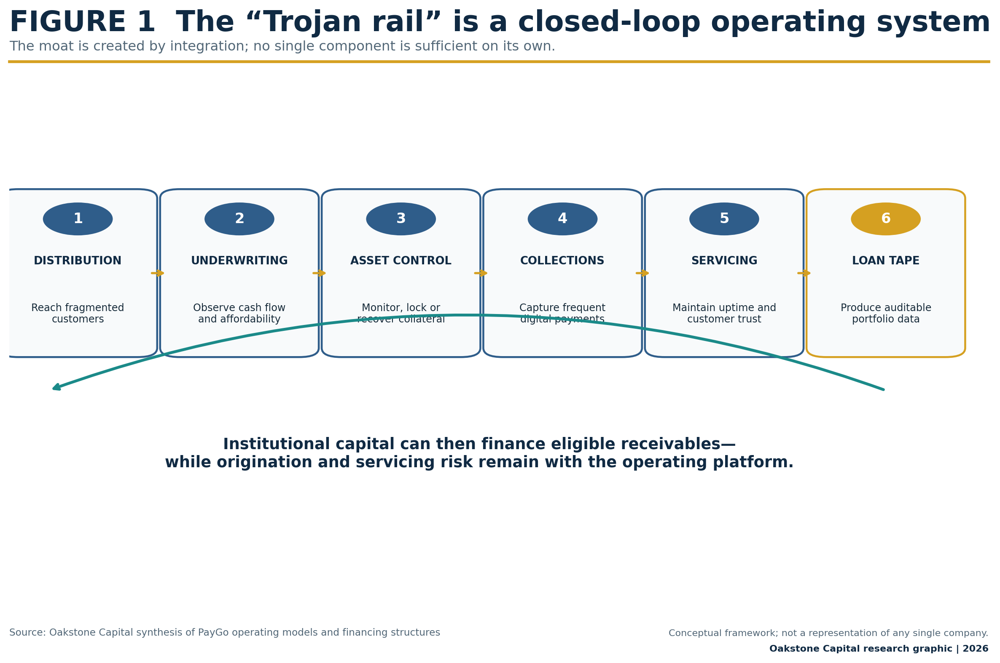
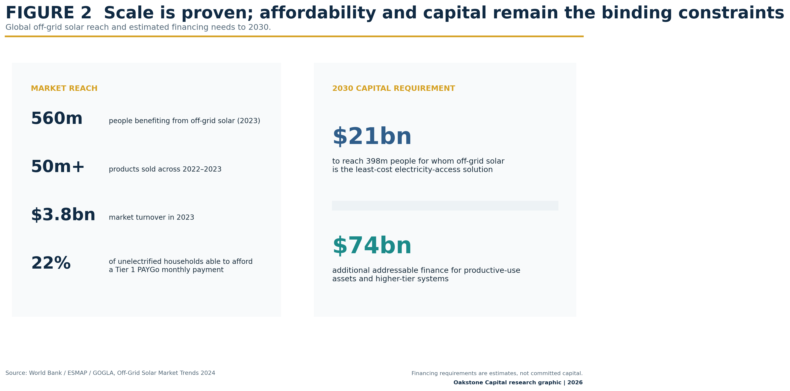
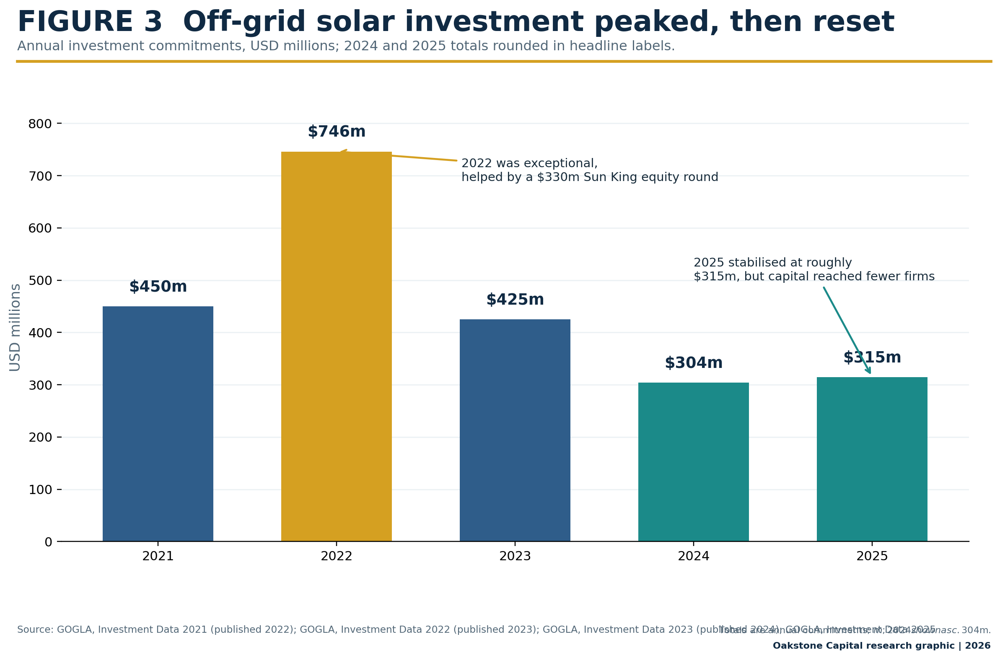
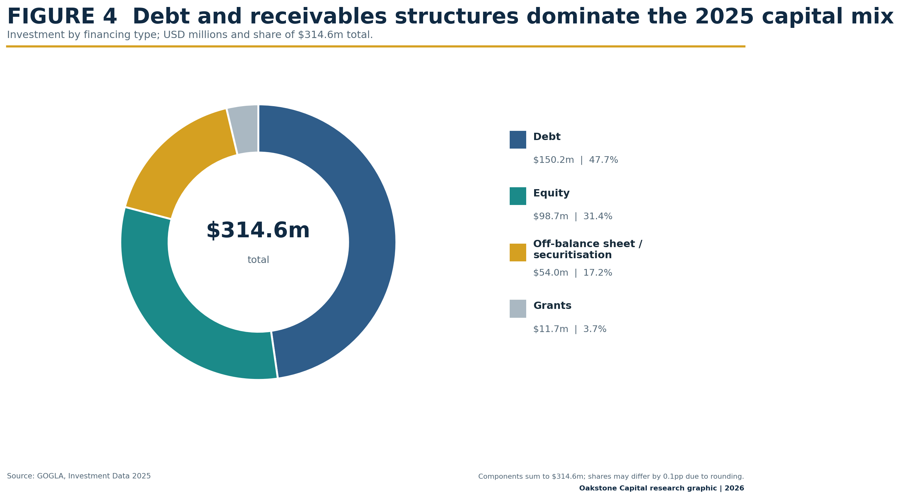
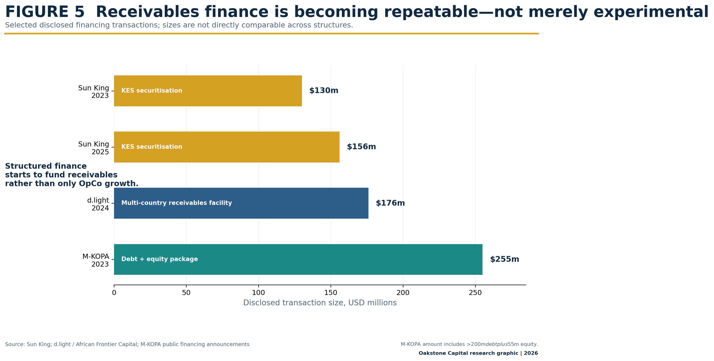
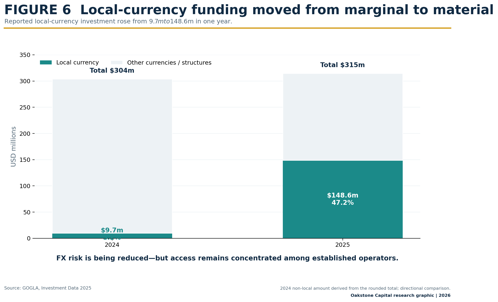
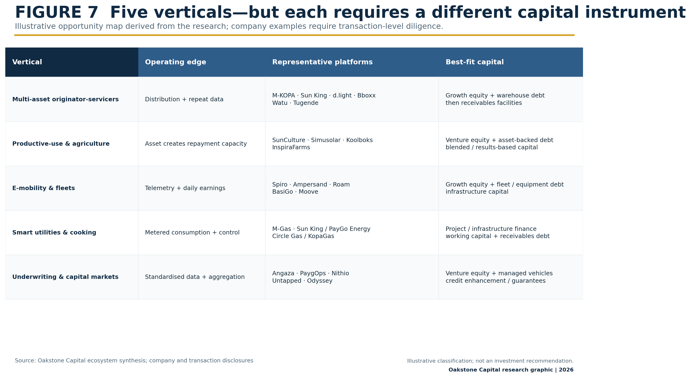
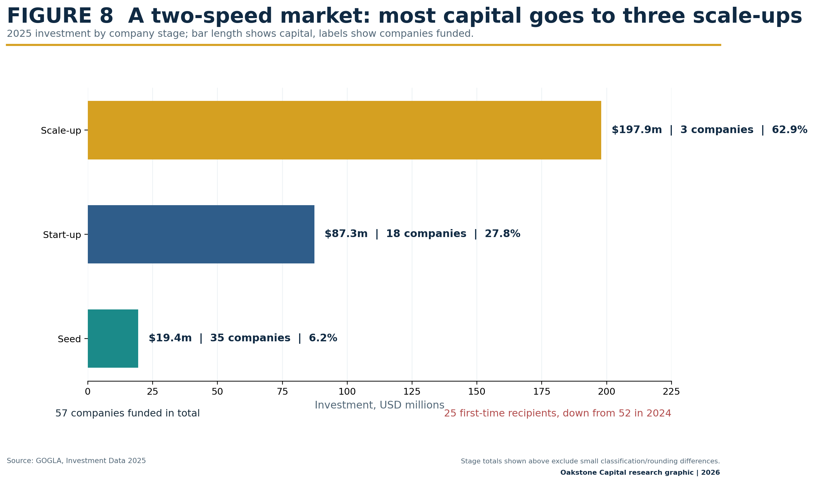

Africa / PayGo / Asset finance / Private credit
The Trojan Rail
How PayGo solar quietly built Africa's asset-finance infrastructure—and what the evidence says about its next chapter.
From a LinkedIn comment to a research question
This research began with a LinkedIn exchange. Walter Tukahirwa, CFA published a thought-provoking post, “PayGo solar is still in the first chapter”. His argument was that the sector's founding image—a solar panel, a rural household and a development-impact narrative—had attracted capital and built an industry, but might now be constraining how investors understood its next phase.
My response was that the solar product may have been only the entry point:
“Solar PayGo companies are an ecosystem for distributing and providing credit for energy consumption. They have spent all these years collecting data and building the ecosystem to support risk assessment and operations so that capital can flow through the ecosystem they have created to the final borrower—rural, urban and peri-urban.”
I also suggested that the sector's funding had evolved in stages: first equity, then corporate debt, and eventually partnerships with banks, specialist credit providers and dedicated receivables vehicles. The comment ended with the proposition that became central to the review:
“To your point of a blended book, I believe they have the opportunity to sell more than energy through their ecosystem.”
That was a hypothesis, not a conclusion. The question was whether the sector's actual financing history supported it.
The subsequent review examined forty landmark equity, debt, warehouse-finance, securitisation, acquisition and restructuring events from 2006 to 2026; GOGLA annual investment data; World Bank and ESMAP market studies; portfolio-quality research; and public disclosures by companies, banks, DFIs and specialist receivables investors.

From energy access to a credit-distribution system
The PayGo model originally solved an affordability problem: a household could benefit from a solar system but could not pay the full purchase price upfront. The industry combined last-mile distribution, mobile-money micropayments, IoT-enabled activation or lockout, and a lease-to-own or instalment contract. The energy product became a digitally controlled financial asset.
By 2020, the World Bank and GOGLA estimated that off-grid solar had become a $1.75 billion annual market, serving roughly 420 million users, after selling more than 180 million products. By 2023, off-grid solar products were estimated to benefit more than 560 million people. More than 50 million products were sold during 2022 and 2023, while market turnover reached about $3.9 billion in 2022 and $3.8 billion in 2023.
This scale created something that did not exist when the industry began: millions of repayment histories from rural, peri-urban and informal customers operating outside conventional credit bureaus. The sector was not only selling electricity. It was creating a proprietary record of whether customers with volatile and undocumented incomes could finance, operate and repay digitally controlled assets.

Finding one: the infrastructure is the operating stack
The most mature PayGo companies combine physical distribution, customer identity records, mobile-money collection, asset telemetry, portfolio monitoring, collections, field servicing and relationships with commercial banks and development-finance institutions.
A bank may have lower-cost capital but rarely has an economical way to originate and collect a $300–$1,000 loan from a farmer, market trader or motorcycle rider. A retailer may have products and distribution but no ability to underwrite irregular cash flows. A software platform may manage data but lack control over the financed asset and customer relationship.
The PayGo operator sits between these institutions. Its defensible capability is the integration of distribution, underwriting, asset control, collections, servicing and reporting.
Finding two: capital shifted from venture funding towards structured credit
Early operators relied on grants and venture equity to fund product development, market education, agent networks, software and operating losses. As customer portfolios grew, the capital structure expanded to include corporate debt, warehouse facilities, receivables vehicles, local-currency facilities and securitisations.
- 2021: $450 million invested, including $326 million of debt and approximately $120 million of equity.
- 2022: $746 million, boosted by Sun King's $330 million equity round.
- 2023: $425 million, including $281 million of debt and $157 million of off-balance-sheet financing to scale-ups.
- 2024: approximately $304 million.
- 2025: $314.6 million, taking cumulative reported investment since 2012 to approximately $4.17 billion.

In 2025, debt represented $150.2 million, or 47.8%, of total investment. Equity accounted for $98.7 million, off-balance-sheet and securitisation structures contributed $54 million, and grants supplied $11.7 million.

Finding three: securitisation is becoming repeatable
Sun King provides the clearest illustration. In 2023, the company and Citi arranged a $130 million Kenyan-shilling securitisation backed by customer receivables. In 2025, Sun King completed a further $156 million local-currency securitisation, with five commercial banks in the senior tranche and BII, FMO and Norfund in mezzanine capital.
The two transactions totalled $286 million. Sun King estimated that the 2025 facility would support about 1.4 million solar products and smartphones, while the two facilities together would finance around 3.7 million products. The company reported having extended roughly $1.3 billion in solar loans to almost ten million customers.
In 2024, d.light announced a $176 million multi-country receivables facility covering Kenya, Tanzania and Uganda. M-KOPA's 2023 financing combined more than $200 million of sustainability-linked debt with $55 million of equity.

These structures demonstrate that repayment data can become sufficiently standardised for institutional diligence, receivables can be legally separated from operating-company risk, and local banks can participate alongside development institutions.
However, this is functional unbundling—not complete risk transfer. The operator normally remains responsible for origination, collections, warranties, servicing and customer relationships. It may retain first-loss exposure, repurchase obligations or performance covenants. An SPV does not repair poor underwriting; it makes its consequences more visible.
Finding four: local currency is as important as legal ring-fencing
Local-currency funding increased from $9.7 million in 2024 to $148.6 million in 2025, representing 47.2% of all capital raised in 2025. The move matters because customers repay in local currency while inventory and earlier corporate facilities were frequently funded in dollars or euros.
Matching liabilities to customer payments reduces the foreign-exchange mismatch that weakened earlier PayGo balance sheets. Yet this access remains concentrated among established platforms with scale, reporting infrastructure and seasoned portfolios.

Finding five: the model is expanding beyond solar
Leading operators are already financing assets unrelated—or only indirectly related—to household electricity. M-KOPA has expanded into smartphone finance, digital services and mobility. Sun King's securitised portfolios include smartphones. Watu and Tugende apply related asset-control and repayment structures to motorcycles, vehicles, smartphones and productive equipment.
The wider opportunity is best understood as five distinct verticals, each with a different risk profile and appropriate capital instrument.

1. Multi-asset originator-servicers and FinCos
M-KOPA, Sun King, d.light, Bboxx, Watu and Tugende increasingly converge around the same model: distribution, underwriting, digital payments, asset control, collections and repeat financing. Their advantage is the ability to place another financed product into an established payment and servicing relationship.
The critical test is whether cross-selling creates better customers or merely more indebted customers. Historical payments on a small solar product do not automatically justify a materially larger or unsecured consumer loan.
2. Productive-use and agricultural asset finance
SunCulture, Simusolar, Koolboks and InspiraFarms finance or service irrigation, fishing equipment, refrigeration, cold storage and agricultural processing. These assets can be more attractive than basic consumer systems because their output can contribute directly to debt service.
Investors must nevertheless prove the connection between the asset and incremental income. Yield, utilisation, seasonality, maintenance and offtake assumptions cannot be inferred from the technology alone.
3. IoT-enabled mobility and commercial fleets
Spiro, Ampersand, Roam, BasiGo and Moove apply telemetry, automated deductions and service-linked contracts to motorcycles, buses and commercial vehicles. Driver revenue, mileage, charging records and remote immobilisation can support underwriting.
Financing a motorcycle rider is not the same as financing electric buses, charging assets or a battery-swap network. Each requires a different combination of venture equity, fleet debt and infrastructure capital.
4. Smart-metered utilities and clean cooking
M-Gas, PayGo Energy's technology within Sun King, and Circle Gas/KopaGas convert cooking fuel into a metered service. Related designs apply to water and electricity. The customer avoids a large upfront purchase and instead makes small payments; the operator gains data and control over service delivery.
KOKO Networks provides an important warning. Its 2026 administration and wind-down followed a dispute over carbon-credit authorisation. Strong technology and customer adoption could not compensate for dependence on regulatory approvals, policy-linked revenue and imported fuel.
5. Underwriting and capital-markets infrastructure
Angaza and PaygOps provide device and customer-management systems. Nithio combines credit analytics with capital deployment. Untapped Global uses IoT data to finance productive assets. Odyssey Energy Solutions connects distributed-energy projects with procurement and capital.
This “picks-and-shovels” layer may become especially scalable. Smaller originators need interoperable systems and portfolio standards; lenders need credible monitoring, comparable loan tapes and enforceable controls.
Finding six: the best assets share four characteristics
- Observable: customer use, payments or asset performance can be measured digitally.
- Controllable: access can be restricted, the asset immobilised or collateral recovered following persistent default.
- Service-linked: the customer continues to rely on maintenance, software, charging, fuel or another operating service.
- Income-generating or expenditure-saving: the asset creates cash flow or replaces a recurring operating cost.
Solar irrigation pumps, commercial refrigeration, motorcycles, batteries, processors and work-enabling smartphones can meet several of these conditions. Unrestricted cash loans do not. The further a platform moves from controllable assets toward unsecured lending, the weaker the original PayGo risk architecture becomes.
Finding seven: sophistication is rising, but capital is concentrating
In 2025, only 57 companies received investment, down from 97 in 2024. Three scale-ups attracted approximately $197.9 million—62.9% of all sector investment. Only 25 first-time recipients raised capital, down from 52.
Locally owned companies received just $9.9 million, an 81% decline from 2024 and an 88% decline from $84.6 million in 2023. No locally owned company received financing classified as start-up or scale-up capital.

This creates an opportunity for shared underwriting infrastructure, portfolio aggregation and financing vehicles capable of purchasing receivables from multiple originators. It also creates a governance challenge: standardisation must not encourage weak platforms to expand before their servicing and consumer-protection systems are ready.
What investors should measure
A PayGo platform should not be assessed simply as a hardware distributor, fintech or utility. Its economics sit across all three. Important indicators include:
| Dimension | Questions and indicators |
|---|---|
| Origination | Customer acquisition cost; deposit and first-payment behaviour; affordability assessment; repeat purchase performance. |
| Portfolio quality | Collection rate against scheduled payments; portfolio-at-risk; contractual delinquency; write-offs; restructurings. |
| Asset control | Asset uptime; lockout effectiveness; repossessions; recoveries; residual value of recovered equipment. |
| Servicing | Response times; maintenance expense; customer complaints; field-service productivity; fraud controls. |
| Funding | Currency and tenor matching; cost of debt; first-loss retention; repurchase obligations; cash released after SPV covenants. |
| Data | Loan-tape completeness; consistent definitions; reconciliation between devices, collections and financial statements. |
GOGLA's PAYGo PERFORM indicators are important because securitisation requires consistent definitions of collections, arrears and portfolio performance. Consumer outcomes must be measured with equal discipline: rapid expansion can produce unsuitable credit, opaque pricing and aggressive collections if customer protection lags growth.
The opportunity is larger than solar—but not unlimited
The evidence substantially supports the original proposition. PayGo companies have built an ecosystem through which capital can reach rural, peri-urban and informal borrowers. The shift from equity-funded operating companies toward receivables vehicles and local-currency securitisation shows that this ecosystem is becoming institutional financial infrastructure.
Three qualifications matter.
- A blended loan book does not automatically create diversification. Customers may still share exposure to weather, commodity prices, currency movements or political shocks.
- IoT data do not substitute for viable unit economics. Remote control may improve collections, but it cannot create income where an asset is unproductive.
- Securitisation does not remove operating risk. Receivable quality continues to depend on the company that originated, installed, serviced and collected the assets.
The next generation will not all look like solar businesses. Some will finance irrigation pumps, cold rooms, electric motorcycles, cooking fuel, water connections, smartphones or industrial appliances. Others will provide the software, telemetry and capital-market infrastructure behind them.
Walter was right: solar may still be the first chapter. The larger story is how a development-led energy sector quietly assembled the operating infrastructure for distributed private credit—and whether that infrastructure can finance the productive assets required by Africa's households and enterprises.
Research and data sources
- GOGLA — Off-grid solar investment, 2021
- GOGLA — Off-grid solar investment, 2022
- GOGLA — Off-grid solar investment, 2023
- GOGLA — The Sector Is Maturing. Capital Is Concentrating, 2025
- World Bank / ESMAP / GOGLA — Off-Grid Solar Market Trends 2024
- GOGLA — PAYGo PERFORM portfolio-quality indicators
- Sun King — 2023 Kenyan-shilling securitisation
- Sun King — 2025 securitisation
- M-KOPA — 2023 financing announcement
- Global Innovation Fund — PayGo Energy / Sun King
- GSMA — Circle Gas acquisition of KopaGas technology
The repository's source register distinguishes sector-level data, company announcements and analytical interpretations.
Research disclaimer: This publication is market research for discussion and education. It is not personalised investment advice, an offer, solicitation or recommendation. Company inclusion is illustrative. Operating status, financing stage, portfolio quality and investability require transaction-specific due diligence. Figures from company announcements are issuer-reported unless otherwise stated.